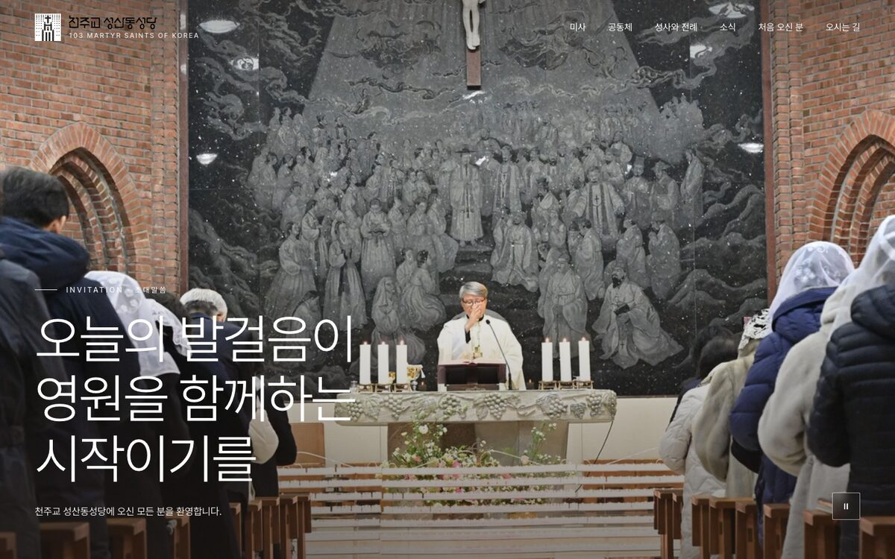
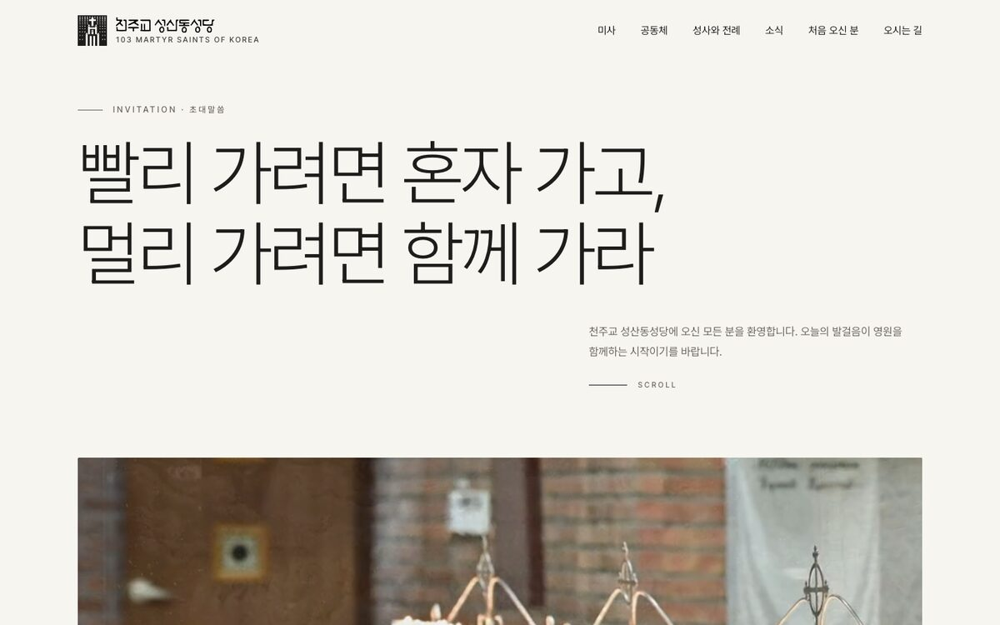
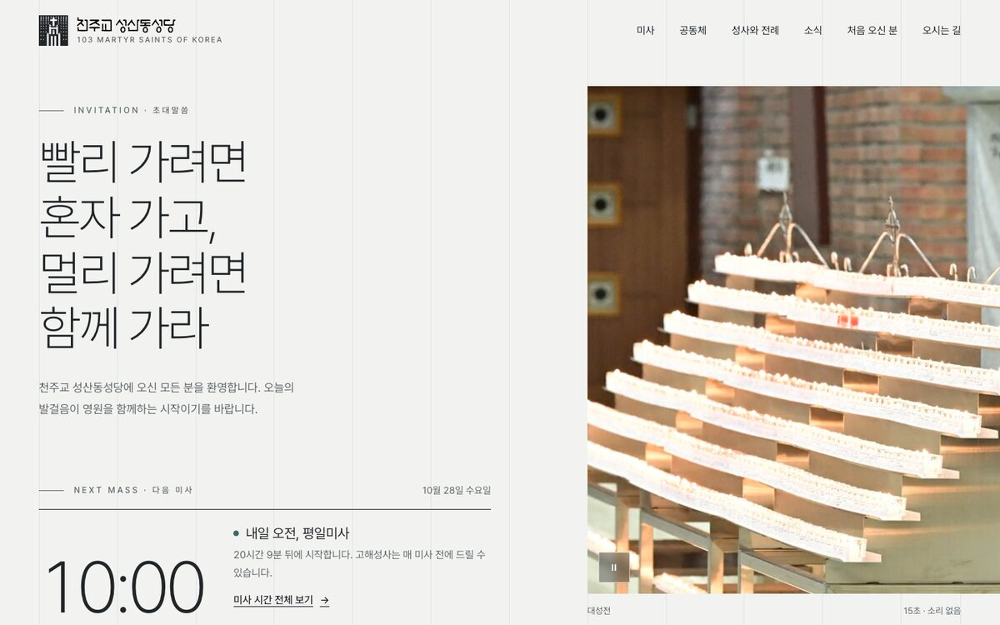
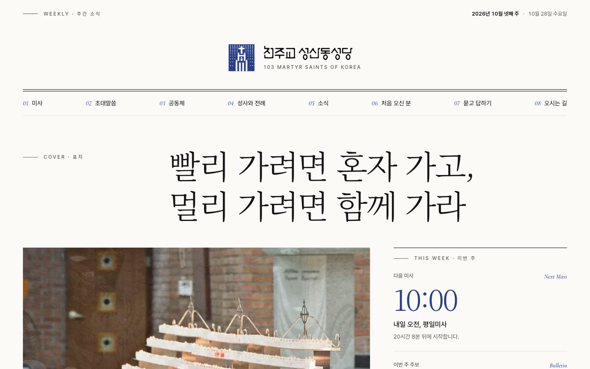

-

09고요수정
여백과 가는 큰 글자, 느린 등장 효과. 공동체 갤러리를 사진이 바뀌어도 깨지지 않는 구조로 바꾸고, 정기 전례 날짜를 자동으로 계산하게 했습니다. 로고와 버튼은 먹색입니다.
-

14빛의 길새 시안
9번의 형제 시안. 액자 속 성당 영상이 스크롤하면 화면 가득 펼쳐지고, 장마다 글이 한 줄씩 떠오릅니다.
-

15회랑새 시안
성당 회랑의 기둥처럼 정확한 격자와 리듬. 차가운 회색 톤에 미사 시간을 시간축 위에 그린 일정표, 스크롤로 가로로 흐르는 사진 갤러리.
-

16주간 소식지새 시안
홈페이지를 이번 주에 펴낸 본당 소식지처럼. 명조 헤드라인과 편집 디자인, 이번 주 미사와 주보를 표지 기사로 보여 줍니다.
English Style Guide
영문 표기 기준
영문 페이지의 용어를 해외 가톨릭 교회와 교구, 미국 주교회의(USCCB), 교황청의 표기에 맞춰 정했습니다. 용어마다 근거 자료와 본당에서 확인할 항목을 정리했습니다.